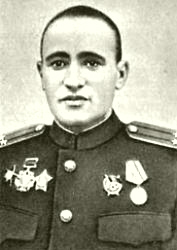

Коноваленко Владимир Онуфриевич - командир 203-го гвардейского стрелкового полка 70-й гвардейской стрелковой дивизии 13-й армии Центрального фронта, гвардии майор.
Родился 9 (22) апреля 1917 года деревне Скребки Шумнянского сельского Совета Витебского района Витебская области ныне Республики Беларусь. Белорус. Окончил 9 классов.
В Красной Армии с 1937 года, призван Ленинградским горвоенкоматом Ленинградской области, город Ленинград. Участник советско-финляндской войны 1939-1940 годов. В 1941 году окончил Сухумское военное пехотное училище. В действующей армии с января 1942 года. Член ВКП(б) с 1942 года.
Командир 203-го гвардейского стрелкового полка (70-я гвардейская стрелковая дивизия, 13-я армия, Центральный фронт) гвардии майор Владимир Коноваленко отличился в 1943 году в боях за освобождения Черниговщины и Полесья.
Вверенный В.О.Коноваленко гвардейский полк, преодолел минные поля и первым форсировал реку Сейм, овладел железнодорожной станцией Бахмач Черниговской области (Украина); форсировал реки Десна, Днепр, Припять.
Гвардии майор Коноваленко умело организовал 23 сентября 1943 года прорыв глубоко эшелонированной обороны неприятеля в Чернобыльском районе Киевской области Украины. Воины-гвардейцы в этот день отразили восемь массированных вражеских контратак, нанеся гитлеровцам значительный урон в живой силе и боевой технике.
Указом Президиума Верховного Совета СССР от 16 октября 1943 года за умелое командование стрелковым полком, образцовое выполнение боевых заданий командования на фронте борьбы с немецко-фашистскими захватчиками и проявленные при этом мужество и героизм, гвардии майору Коноваленко Владимиру Онуфриевичу присвоено звание Героя Советского Союза с вручением ордена Ленина и медали «Золотая Звезда» (№ 1822).
Подполковник В.О.Коноваленко был тяжело ранен в грудь в бою под городом Жмеринка Винницкой области Украины и 22 марта 1944 года скончался. Похоронен в братской могиле в Жмеринке.
Согласно приказу ГУК Наркомата обороны СССР от 12 июня 1944 года № 02029: командир 203-го гвардейского стрелкового полка 70-й гвардейской стрелковой дивизии - Герой Советского Союза - подполковник Коноваленко В.О. - исключён из списков Красной Армии, как умерший от ран 22 марта 1944 года.
Награждён орденами Ленина, Красного Знамени, Суворова 3-й степени, Александра Невского, 2 орденами Красной Звезды, медалями.
Именем Героя названа Замосточская средняя общеобразовательная трудовая политехническая школа с производственным обучением Витебского района Витебской области Республики Беларусь.